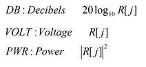

DSP_SPECTRUM
This API computes the frequency spectrum of a specified array.
The FFT is performed to give the frequency spectrum (COMPLEX c(j)
values) as follows:
DSP_FFT(src, c, size, RECT);
then, for
0≤ j ≤ size/2 - 1, each COMPLEX value c(j) is converted to
COMPLEX value rtemp(j) as
follows:
rtemp(j) = c(j) x 2.0 / size: for j ≠ 0 rtemp(0) = c(0) / size: for j = 0
then,
R(j) is calculated by filtering (filter) and adjusting as
follows:
R(j) = | (rtemp(j))| x filter [j] / std_level R(0) = | (rtemp(0))| x filter [0] / std_level
The
results (which are amplitudes only, without phase) that are returned to result
are determined by output_mode as follows:

for 0≤ j ≤ size/2 - 1.
This API is defined in the header file /opt/hp93000/soc/prod_com/include/MAPI/libdsp.h.
Syntax
DSP_SPECTRUM(ARRAY_I& src, ARRAY_D& result, INT output_mode,
DOUBLE std_level, INT window, ARRAY_D& filter);
DSP_SPECTRUM(INT *src, DOUBLE *result, INT size, INT output_mode,
DOUBLE std_level, INT window, DOUBLE *filter);
DSP_SPECTRUM(ARRAY_D& src, ARRAY_D& result, INT output_mode,
DOUBLE std_level, INT window, ARRAY_D& filter);
DSP_SPECTRUM(DOUBLE *src, DOUBLE *result, INT size, INT output_mode,
DOUBLE std_level, INT window, DOUBLE *filter);I/O |
Parameter |
Description / Range |
|||
|---|---|---|---|---|---|
I |
src |
Source array |
|||
O |
result |
Computed results
|
|||
I |
size |
Number of elements to be processed
size can be any integer in the above range. In the case that size is not power of two, the Xpress data mode must be enabled in order to process the elements. |
|||
I |
output_mode |
Output mode of the spectrum |
|||
|
|
|
Value |
Description |
|
|
|
|
DB VOLT PWR WATT |
Decibels Voltage Power in [W] Power in [W] |
|
I |
std_level |
The std_level is used for scale adjustment of the spectrum data. If output_mode If output_mode If std_level≠ 0, the spectrum are treated such
as shown in the To adjust the scale to dBm at any general impedance (Z), specify If output_mode=VOLT and std_level=1, the resultant values are Vpeak. If output_mode=VOLT and std_level=1.414, the resultant values are Vrms. If output_mode=DB and std_level=1.414, the resultant values are dBV. |
|||
I |
window |
Window |
|||
|
|
|
Value |
Description |
|
|
|
|
RECT HANNING HAMMING FLAT_TOP FBLACKMAN |
Rectangular window (no window) Hanning window Hamming window Flat-top window Blackman window |
|
|
|
See Window functions. |
|||
I |
filter |
An array containing the filter transfer function Each element corresponds to a result array element (size of result array) ≤ (size of filter) NULL (0): filtering is not performed. |
|||
You can use this function to analyze a variety of test parameters on the frequency domain. The following example 2 shows a calculation approach for the spurious free dynamic range (SFDR) of a D/A converter.
Return value
STSucceed or STFailure.
Examples
Example 1: DAC distortion test
int debug;
int n,j;
int num_cycle_DAC, num_harmonics_DAC;
bool validSamples = false;
ARRAY_I adc_wave;
ARRAY_D dac_wave,dac_spec;
DYNPARtype dac_thd;
int GlobalOverOn;
int off_line;
int nsites; // Max. number of configured Sites
ARRAY_I esites, csites; // Enabled Sites array
ON_FIRST_INVOCATION_BEGIN();
GET_TESTFLOW_FLAG("debug_analog", &debug);
GET_TESTFLOW_FLAG("global_overon", &GlobalOverOn);
GET_SYSTEM_FLAG("offline", &off_line);
GET_ENABLED_SITES(esites);
GET_CONFIGURED_SITES(csites);
nsites = csites.size();
//
// Connect and activate analog module trigger line
//
Routing.pin(DGT_pin).connect(TM::SINGLE);
DGT(DGT_pin).enable();
//
// Perform the test
//
DIGITAL_CAPTURE_TEST( 1.0 ) ;
//
// Deactivate analog module trigger line and disconnect
//
DGT( DGT_pin ).disable();
Routing.pin(DGT_pin).disconnect();
ON_FIRST_INVOCATION_END();
//
// Retrieve measurement data
//
dac_wave = DGT ( DGT_pin ).getWaveform();
//
// Perform computation
//
for (n=0;!validSamples && n < dac_wave.size();n++)
{
//
// Find constant wave
//
if (dac_wave[0] != dac_wave[n])
{
validSamples = true;
}
}
//
// Check whether it is a valid waveform
//
if (validSamples && dac_wave.size() > 0)
{
//
// Calculate THD & SND
//
DSP_THD(dac_wave,&dac_thd,num_cycle_DAC,num_harmonics_DAC,2,DB,0);
}
else
{
dac_thd.thd = -999.99;
dac_thd.snr = -999.99;
}
if (debug)
{
cout << "Set_Init_Flags : Debug ON " << endl;
if (off_line)
{
cout << "Set_Init_Flags : OFF-line " << off_line << endl;
}
cout << "Util_Class::Set_Init_Flags : Nsites : " << nsites << " Enabled_sites : ";
for (j = 0; j < esites.size(); j++)
{
cout << esites[j] << " ";
}
cout << endl;
PUT_DEBUG(DGT_pin,"Dist_dac_wave",dac_wave);
if(validSamples)
{
DSP_SPECTRUM(dac_wave,dac_spec,DB,0.0,RECT,0);
PUT_DEBUG ( DGT_pin , "Dist_dac_spec" , dac_spec );
}
cout << endl;
}
//
// Compare computed result with limits and set pass/fail
//
TEST( DGT_pin, "DAC_SNR", dac_thd.snr);
TEST( DGT_pin, "DAC_THD", dac_thd.thd);
This example performs a DAC distortion test. In the debugging mode, the frequency spectrum of the result waveform is calculated and displayed in the Signal Analyzer.
Example 2: Calculate the Spurious Free Dynamic Range (SFDR)
ARRAY_D DAC_output, spect_array; DOUBLE min, max, SFDR; INT min_index, max_index; INT fundament = 65; ... ... DSP_SPECTRUM(DAC_output, spect_array, DB, 0.0, RECT, NULL); spect_array[0] = -200.0; spect_array[fundament] = -200.0; DSP_MINMAX(spect_array, &min, &max, &min_index, &max_index); SFDR = 0.0 - max;
This example calculates the Spurious Free Dynamic Range (SFDR) of the D/A converter.
65 cycles of full-scale sinewave is programmed within 1024 points of D/A converter data.
DSP_SPECTRUM converts the DAC output's analog waveform elements
into the sine and cosine frequency components, then calculates the corresponding amplitude
values in dB, and returns the value to the array spect_array. Since
std_level is given as 0.0, the fundamental signal level is set to 0.0
dB.
After calculating the spectrum array, the DC and fundamental elements are changed to
-200.0 dB on purpose to be ignored enough when DSP_MINMAX searches for the
maximum spurious level from the spectrum array.
DSP_MINMAX searches for
the maximum level from the spectrum array. The DC and fundamental element values were masked.
The worst (highest) level of the spectrum will be detected.
The last line calculates the SFDR. 0.0[dB] means the fundamental level, while max is the spur.
Example 3: Check before uploading a valid waveform
for (n=0; !validSamples && n < dac_wave.size(); n++)
{
if (dac_wave[0] != dac_wave[n])
{
//
// Find constant wave
//
validSamples = true;
}
}
if (validSamples && dac_wave.size() > 0)
{ // ^^^^^^^^^^^^^^^^^^^^
//
// Calculate THD & SND
//
DSP_THD(dac_wave,&dac_thd,num_cycle_DAC,num_harmonics_DAC,2,DB,0);
}Functional changes
- Introduced before SmarTest 6.3.2
- SmarTest 6.5.2: The size parameter is not restricted to the power of two.
- SmarTest 7.2.1: Source array size is unbounded